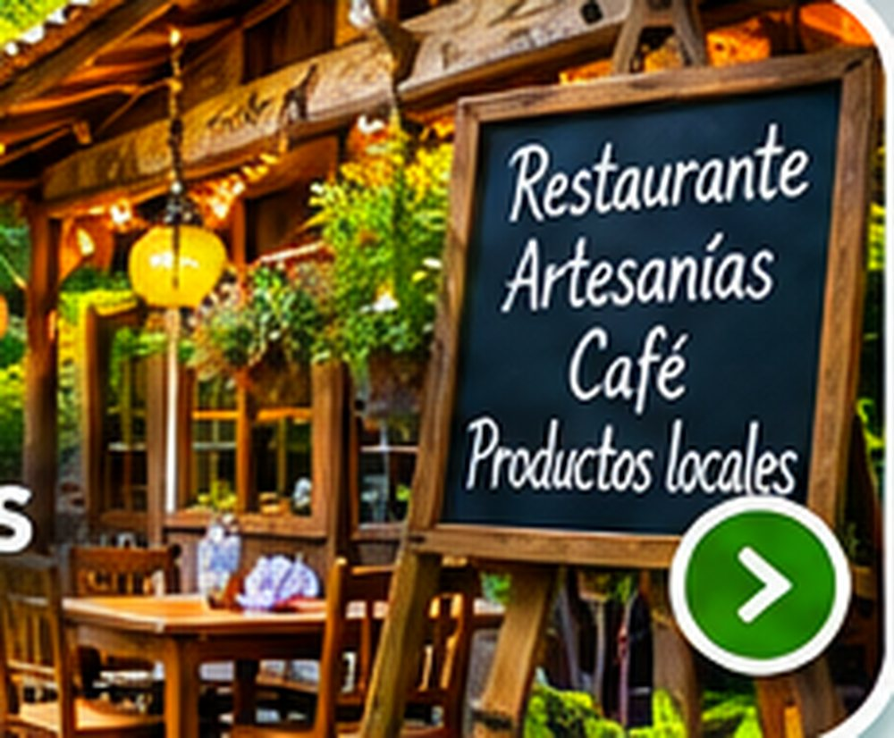

Restaurantes y gastronomía
Restaurantes, cafés y experiencias gastronómicas.
Apoya los negocios locales y descubre servicios, sabores y experiencias comerciales.
← Volver al inicioInformación para conocer el territorio con respeto y apoyar a sus comunidades.

Restaurantes, cafés y experiencias gastronómicas.
Café preparado, tostado y productos de origen.
Tiendas, minimercados y comercios para visitantes.
Productos elaborados por creadores locales.
Servicios y experiencias comerciales.
Transporte, alquiler de equipos y otros servicios.